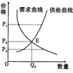
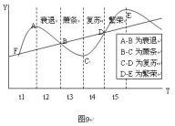
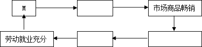
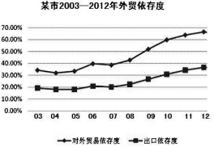

2013年下期高三年级第1次月考
政治试题
总分100分 时量 90分钟
一、选择题（本大题共24小题，每小题2分，共计48分。在每题给出的四个选项中，只有一个选项是最符合题意的。）
1. 为庆祝中行成立100周年、毛主席诞辰120周年，我国首次批准并权威发行中行100年纪念钞大全套。2013年5月30日，湖南省唯一指定发行兑换中心：长沙市雨花区梓园路336号中国邮政储蓄银行一楼大厅。对“纪念钞”的说法，正确的是( )
①纪念钞可直接用于购买商品
②纪念钞的面值是由国家规定的
③纪念钞是法定货币，其购买力由国家决定
④它只具有贮藏手段职能而不具有流通手段职能
A．①② B．①④ C．②③ D．②④
【答案】A
2.一个想要改变自己办公室环境的白领，用闲置多时的《音乐之声》碟片换来了一盆漂亮的君子兰；一个喜欢工艺品的收藏爱好者，用瑞士军刀换来了一个精致的木筷盒漆器……这样的故事每天都在易物网上发生。这种以物易物的交换方式( )
①是一种商品流通 ②可以使商品的价值最大化
③可以使商品的使用价值最大化 ④遵循了等价交换的原则
A．①② B．②③ C．③④ D．①④
【答案】C
3．甲、乙、丙是传统的贸易伙伴国，布料是乙、丙两国对甲国出口的大宗商品。面对世界经济低迷不振，乙国布料行业通过技术革命劳动生产率提高3%，而丙国宣布对甲国货币贬值5%，如果其他条件均不变，可能会带来的影响有( )
①有利于该地区开展良性贸易竞争
②影响该区域正常贸易秩序
③甲国增加进口乙国服装，减少进口丙国服装
④甲国减少进口乙国服装，增加进口丙国服装
A．①② B．②③ C．②④ D．③④
【答案】C
4.假设2012年我国A商品的单位价值用人民币表示为6400元，美元对人民币汇率为1:6.4。如果2013年我国生产A商品的行业劳动生产率提高20%,劳动者数量增加10%，人民币发行量增加20%，且人民币对美元升值5%，其他条件不变，按照等价交换的原则，该企业生产的A商品用美元标价，其价格为( )
C．1260美元 D．875美元
【答案】A
5．右图曲线反映某种商品价格和需求、供给的关系，不考虑其他因素，可以推断（ ）
①价格在P1时，该商品处于卖方市场状态下
②价格在P2时，生产者将缩小生产规模
③价格P2→P0时，该商品的替代品需求量上升
④需求曲线不变，该商品劳动生产率提高，E点将向右下方移动
A．①② B．②③
C．①④ D．③④
【答案】D
6． 2013年2月25日，国家发改委又上调了油价，汽、柴油销售价格每吨分别提高300元和290元。蛇年伊始，油价又重回“8元时代”。对油价上调，你认为其合理依据应该包括（ ）
①油价调整应以国家政策为主，以市场调节为辅 ②石油资源供需失衡，生产成本提高
③油价提高有利于供油企业提高生产效率 ④利用价格调整，促进石油资源的节约和保护
A．①④ B．①② C．②③ D．②④
【答案】D
【解析】①说法错误，国家上调油价是根据生产成本、供求、经济社会客观情况作出的，②④符合题意。
7．图9为宏观经济周期四个不同阶段的表现情况。下列判断错误的是（ ）
A．A-B阶段消费需求量下降，企业盈利降低
B．B-C阶段失业率增大，适宜增加财政支出
C．C-D阶段适宜增发国债，增加货币供给量
D．D-E阶段需扩大财政赤字，降低贷款利率
【答案】D
8． “全国销量领先的红罐凉茶改名加多宝”这一广告语或将成为历史。3月1日，加多宝在其官网发表声明，表示“将被迫更换广告”。这意味着，王老吉在这场“广告大战”中暂时占得了上风。此前，加多宝曾表示坚持不改广告语。对于诉中禁令，加多宝曾表示其投放的广告都通过中国广告协会的审查备案，完全合法，不存在任何虚假宣传，将坚持原来的广告投放计划。材料说明影响企业竞争力提高的因素有（ ）
①强化企业在创新中的主体地位，不断增强核心竞争力和发展后劲
②调整经营战略，利用资源优势
③加强品牌建设，拓展销售渠道
④调整产业结构，提高产品质量
A．①② B．②③ C．③④ D．①④
【答案】B
9 ．节假日，城里人不再像往常一样涌向各个景点，而选择去乡村体味田园生活。越来越多的农村人依据山水优势和市场需求发展“农家乐”，城里人，乡里人“农家乐”里乐融融。这主要说明（ ）
①城里人的消费趋于理性和合理 ②生产决定消费
③消费促进产业结构的优化升级 ④人们日益重视精神消费
A．②③ B．②④ C．③④ D．①③
【答案】D
10．习近平主席在十二届全国人大第一次会议闭幕式上提出要让人民共享人生出彩机会。这句振奋人心的话意味着要提高劳动报酬在初次分配中的比重实现经济发展的良性循环，从而促进人民的全面发展。下列选项的序号从下图的上排M开始，按所示方向，正确的是（ ）

①工资收入增加 ②生产供给增加 ③消费需求增加 ④劳动需求增加
A．④①②③ B．④①③② C．①③④② D．①③②④
【答案】D
11． 2013年4月6日，海南省常务副省长谭力表示，将于五一小长假前开放中国最新的城市—驻地为永兴岛的三沙市的观光旅游。为有效推进三沙市的旅游、渔业资源开发和海洋环境保护，下列可行的措施有( )
①允许当地渔业资源开发企业发行企业债券来直接融资
②通过成立股份有限公司发行股票筹措资金，以海洋环境保护为公司经营目的
③某渔民出资人民币10万成立有限责任公司，并以出资额为限对公司承担责任
④成立旅游开发公司，并由其制定环保条例，积极承担社会责任
A．①② B.①③ C.③④ D.②④
【答案】B
12．在我国城市和乡村活跃着一个“草根经济”群体，“草根经济”以小型企业、微型企业、城乡个体工商户、创业者和农户为主体，广泛存在于区县、街道、社区、乡村，“是社会经济中最具活力的部分”。“草根经济”发展与活跃从根本上讲是因为它( )
A．解决了低收人群体的就业 B．符合按劳分配的收入分配原则
C．是社会主义经济的重要组成部分 D．有利于社会主义市场经济的发展
【答案】D
2013年3月1日，国务院办公厅发布新“国五条”细则，坚持执行以限购、限贷为核心的调控政策，坚决打击投资投机性购房。对二手房交易征收差额20%所得税成为此次调控最大看点。据此回答13-14题
13.针对此次调控，下列认识正确的是（ ）
A. 市场上一手新房的需求可能会相应增加
B.征收二手房交易差额所得税，直接目的是实现社会公平
C.政府坚持执行房价调控政策，是因为投资投机性购房行为是房价上涨的根本原因
D. “限购”、“限贷”是国家运用用经济手段来加强房价的宏观调控
【答案】A
14．针对“ 二手房交易征收差额20%所得税”政策，有人通过签订两份合同（一份通过少报价格或少报面积的方式交给房地产交易中心过户的低房价合同，一份作为实际支付交易金额的合约并实际履行）的形式来避税。该行为（ ）
A．属骗税行为 B．不利于调节收入分配，实现社会公平
C．随意报价,违背了税收的固定性 D．受经济利益的驱使，体现市场的自发性
【答案】D
15. 2012年7月6日，央行下发通知，金融机构一年期存款基准利率下调0.25个百分点，一年期贷款基准利率下调0.31个百分点。这体现出（ ）
A.政府调整财政政策，促进经济发展 B.我国经济政策实现“由松到紧”的转变
C.存贷款利率下调，银行获利必将减少 D.企业“资金难”问题将得到缓解
【答案】D
【解析】央行下调存贷款利率，表明货币政策由紧到松。有利于企业获得更多的资金，银行获利不一定会减少。
16.为推进农产品质量安全自律，规范农产品生产经营行为，2013年5月30日，湖南省农业厅决定在全省开展农产品质量安全诚信建设试点工作，全面提升农产品质量安全水平。为避免农产品质量安全危机的重演（ ）
①企业应制定正确的经营战略，避免介入安全事故频发的高危行业
②政府要加强食品安全监管力度，提高企业违法成本
③食品行业应加强自律，引导企业依法诚信经营
④消费者应提高安全意识，及时寻找相关产品替代
A．①② B．②③ C．③④ D．②④
【答案】B
【解析】①④说法均错误。②③符合题意要求。
17．我国进一步加大了财政投入，提高农村居民重大疾病医疗保障水平，将农村儿童白血病、肺癌等20种重大疾病医疗优先纳入城乡居民大病保险范围，先由新型农村合作医疗按照不低于70%的比例进行补偿，对补偿后个人自付超过城乡居民大病保险补偿标准的部分，再由大病保险按照不低于50%的比例给予补偿。这表明（ ）
①财政是实现社会公平的物质保障
②购买商业保险是规避风险的有效措施
③我国初次分配兼顾了效率与公平
④我国致力于城乡经济社会一体化发展
A．①③ B．①④ C．②③ D．②④
【答案】B
【解析】我国加大财政投入，提高农村居民重大疾病医疗保障水平体现了财政促进社会公平的作用，①符合题意；②观点正确，和材料无关。材料中的新型农村合作医疗和大病保险不是商业保险，是一种社会保险；财政属于国民收入的再分配，③排除；“对补偿后个人自付超过城乡居民大病保险补偿标准的部分，再由大病保险按照不低于50％的比例给予补偿”体现城乡经济社会一体化发展，④符合题意。
18． 2013年2月，湖南省公共财政支出预算安排公布，排在前三位的是：教育预算安排137.7亿元，新增13亿元，社会保障和就业预算安排75亿元，医疗卫生68.8亿元。湖南省政府的投入表明（ ）
A.政府在资源优化配置中起基础性作用
B.政府财政支持是我国民生事业发展的根本动力
C.政府践行科学发展观，促进社会公平，注重社会的和谐
D.政府运用必要的行政手段对社会发展实行有效的宏观调控
【答案】C
【解析】2013年湖南财政重点投入的方向是教育、社保、就业、医疗等民生领域，有利于促进公平，缓和矛盾，实现社会和谐。在资源优化配置中起基础性的作用的是市场调节，A错误，B表述不科学，财政政策是经济手段，D不选。
19．2013年4月10日，国务院常务会议决定，自今年8月1日起，将交通运输业和部分现代服务业“营业税该增值税”试点在全国范围内推开，把广播影视作品的制作、播映、发行等纳入现代服务业试点。增值税改革后，税率在原有的17%和13%的基础上，增加了11% 和6%两档低税率。增值税改革（ ）
①必然会促进中小企业特别是小微企业发展 ②可以直接增加税改企业员工的收入
③有利于避免重复征税和防止上环节偷漏税 ④可能使消费者受益
A、①② B、③④ C、①③ D、②④
【答案】B
【解析】①太过绝对，增值税改革在一定程度上会减轻企业税负，直接增加员工收入说法错误，②不选。③④正确。
20．国务院决定在现有资源税从量定额计征基础上增加从价定率的计征办法，调整原油、天然气等品目资源税税率，进一步理顺资源类产品的价格。其意义主要在于( )
①促进国民经济平稳运行 ②缩小贫富差距、体现社会公平
③调整结构、转变方式、提高效益 ④促进低碳经济、实现持续发展
A．①② B．①④ C．②③ D．③④
【答案】D
【解析】征收资源税对调整经济结构、转变方式、提高效益，促进低碳经济、实现持续发展等具有重要意义，③④符合题意。①是财政的作用；②观点是征收个人所得税的意义。
2013 年初．我国对大陆境外企业价格垄断开出首张罚单——韩国三星、LG等六家国际大型面板生产商，因垄断液晶面板价格，遭到国家发改委经济处罚3. 53亿元人民币。这也是迄今为止中国开出的金额最高的一张价格违法罚单。据此回答21-22题
21 .这次反垄断调查和处罚( )
①维护了中国内地企业的合法权益和公平竞争的市场秩序
②不利于深化这些液晶面板企业与中国内地彩电企业的合作
③表明经济全球化是以发达资本主义国家为主导的
④有利于促进行业发展并惠及消费者
A．①② B．②③ C．①④ D．③④
【答案】 C
【解析】 这次反垄断调查和处罚有利于深化这些液晶面板企业与中国内地彩电企业的合作，②错误。③和材料无关，不符合题意。反垄断调查和处罚有利于维护良好的市场秩序，促进行业发展并惠及消费者，①④正确且符合题意。
22．对这一处罚行为的正确评论是( )
①引发排外质疑，必然导致贸易摩擦和冲突 ②维护法治环境，推进现代市场体系建设
③践行世贸原则，展示开放型经济管理水平 ④坚持独立自主，为民族企业提供特别保护
A．②③ B．①② C．②④ D．③④
【答案】 A
【解析】 针对境外企业垄断价格我们进行调查和处罚是维护市场秩序的合法行为，①、④理解错误。
23．2013年6月11日，神舟十号载人飞船由长征二号F遥十火箭在位于中国西北部的酒泉卫星发射中心发射升空。天宫一号和神舟十号飞船组合体飞行期间，3名航天员将进驻天宫一号并开展多项航天医学实验、技术试验及太空授课活动。神舟十号开启了中国载人航天应用飞行的新时代。这说明（ ）
A．我国航天技术世界第一
B．我国社会主义市场经济能够集中力量办大事
C．社会主义市场经济以共同富裕为根本目标
D．坚持自主创新是“神舟十号”成功发射的物质保障
【答案】B
【解析】国家财政为科技发展提供强有力的物质保障，C选项和材料无关。“神舟十号”发射成功说明我国社会主义市场经济能够实行强有力的宏观调控，能够集中力量办大事，选B。
24.伴随着西部大开发应运而生的西博会2013年的主题是“西部融入世界，开放成就辉煌”，这个主题说明( )
①经济全球化对发展中国家的威胁日益加深
②拓展对外开放的广度和深度，提高我国开放型经济水平
③生产全球化趋势不可阻挡
④经济全球化使各国经济日益相互依赖、相互联系
A. ①② B. ②③ C. ①④ D. ②④
【答案】D
【解析】经济全球化对发展中国家机遇与挑战并存，①不对，材料体现不出生产全球化，③不选。
二、非选择题（共52分）
25．（20分）自我国坚定实行改革开放国策，特别是加入世贸组织以来，经济社会实现了高速发展。东部某市与世界经济的脉搏也日益紧密地联系在一起。
材料一 
注：外贸依存度是一个国家进出口贸易总额在国内生产总值（GDP）中所占的比重。目前从世界平均水平看，外贸依存度为41%，其中，发达国家为38．4%，发展中国家为51%。过去10年，该市外贸结构中出口加工型、资源型、劳动密集型产品所占比例很大。
材料二 金融危机以来，该市外向型企业面临较大生存压力，特别是其中的中小企业更是经历生存的严冬。据统计，该市72.45%的小企业预计2012年没有利润或小幅亏损，对2012年经营业绩信心较低；3.29%的小企业预计可能大幅亏损或歇业，对未来经营持悲观态度。
材料三 面对严峻经济形势，该市准备进一步调研中小企业生存境况和调整帮扶政策。但部分社会人士明确反对政府出手帮扶中小企业，认为“众多中小企业在经济形势良好时把盈利全揣在了自己的口袋，那么当前形势严峻时也理所应当独自面对亏损，这才是真正的市场经济”，由此引发了激烈的社会讨论。
（1）揭示材料一所蕴含的经济信息（3分），并指出和说明材料一、二之间的关系（4分）。
（2）请运用“生产”与“发展社会主义市场经济”的相关知识，对材料三中部分群众的观点加以评析。（13分）
25．（1）（7分）①材料一显示了2003—2012年：该市外贸经济持续快速发展；（1分）
但是该市外贸依存度已经显著高于世界水平和发展中国家平均水平，整体经济增长拉动力量不协调；（1分）该市外贸结构不合理，主要依靠增加物质资源和人力消耗来推动发展。（1分）
②材料一与材料二之间存在因果关系（1分）。经济全球化在促进各国经济合作发展的同时，也使得一国的经济波动更可能殃及他国，加剧全球经济不稳定性（2分）。正是因为该市经济发展对外依存度过高，在金融危机外部消费能力锐减的情景下，才如此显著地影响到了该市外向型企业的经营发展（1分）。
（2）（13分）
这些群众的看法是片面的。（1分）
①在市场经济条件下，企业的确应是自主经营、自负盈亏的独立市场主体（1分）同时，对于部分高污染、高能耗的中小企业，以危机为契机加速其淘汰与提升，符合我国经济结构优化思路，符合我国经济发展方式转变的要求（2分）。因此，材料三中部分群众的观点从这些角度理解，具有合理性。
②但是，政府对中小企业的困境绝不可旁观，这是因为：a、中小企业适合初级阶段生产力发展不平衡、多层次状况（2分），是社会主义市场经济的重要组成部分（1分）。它们并没有把全部“盈利全揣在了自己的口袋”，而是发挥着利用分散资源、促进商品流通、扩大社会服务、方便人民生活、增加就业、扩大出口、增加国家税收等众多积极作用（2分）因此对非公有制经济我们要采取鼓励、支持、引导（1分）。
b、我国社会主义市场经济强调市场在国家强有力宏观调控下对资源配置起基础性作用，而不是放任各类市场主体自由发展（2分）。政府出台宏调政策帮扶中小企业脱困，有利于弥补市场调节不足，减少资源浪费，减少社会经济不稳定性和发生经济波动、混乱的可能（2分）。
26．阅读材料，回答下列问题。
2013年以来，食品安全事件频频发生：蔬菜有毒，饮料有害，饮水也不干净，连一向认为比较安全的大米含铅量也严重超标；毒奶粉、人造鱼翅事件的尘埃刚刚落定，毒生姜、假羊肉事件又"粉墨登场"。各种食品安全"门"不断考验着消费者的承受力，这一扇扇"门"的开启，让消费者对食品安全产生了担忧。"民以食为天，食以安为先"，针对食品安全，专家呼吁要以道德良心筑牢食品安全防线，同时完善制度、规范执法，更要加强经济伦理建设。
结合当前社会实际，运用经济生活知识，说明呼吁加强经济伦理建设的理由。（12分）
26．①形成以道德为支撑、法律为保障的社会信用制度，是规范市场秩序的治本之策。加强经济伦理建设，是构建社会信用体系的重要内容，有利于规范市场经济秩序，促进市场经济健康发展。（3分）
②商品是使用价值和价值的统一体，使用价值是价值的物质承担者。加强经济伦理建设，有利于提高商品质量，促进资源有效利用与合理配置，有利于生产经营者实现商品价值，有利于消费者获得商品的使用价值，有利于维护消费者合法权益，实现社会主义生产目的。（3分）
③企业守法、合乎道德地开展生产经营活动，是企业经营成功的必要条件。经济伦理建设，有利于促进企业积极承担社会责任，树立良好的信誉和形象，顺利地开展生产经营活动，增强自身的竞争力。（3分）
④当前经济伦理缺失，市场秩序失范，已严重影响消费环境和消费信心。加强经济伦理建设，规范市场秩序，有利于营造良好的市场消费环境，提振消费信心，促进消费扩大，发挥消费对经济的拉动作用，促进经济发展。（3分）
27．(20分） 1月31日，2013 年中央一号文件发布，连续第十年聚集焦“三农”。阅读材料，完成下列各题。
材料一 文件提出，鼓励和支持承包土地向专业大户、家庭农场、农民合作社流转。其中，“家庭农场”的概念是首次在中央一号文件中出现。家庭农场是指以家庭成员为主要劳动力，从事农业规模化化、集约化、商品化生产经营，并以农业收入为家庭主要收入来源的新型农业经营主体。发展家庭农场是提高农业集约化经营水平的重要途径。
材料二 文件提出要努力提高农户集约经营水平。按照规模化、专业化、标准化发展要求，引导农户采用先进适用技术和现代生产要素，加快转变农业生产经营方式。创造良好的政策和法律环境，采取奖励补助等多种办法，扶持联户经营、专业大户、家庭农场。大力培育新型农民和农村实用人才，着力加强农业职业教育和职业培训。充分利用各类培训资源，加大专业大户、家庭农场经营者培训力度，提高他们的生产技能和经营管理水平。制定专门计划，对符合条件的中高等学校毕业生、退役军人、返乡农民工务农创业给予补助和贷款支持。
（1）运用经济生活知识分析发展家庭农场的经济社会意义？（12分）
（2）结合材料二，运用经济生活知识说明如何提高我国农户集约经营水平。（8分）
(1) ①有利于推进所有制结构的调整和优化，促进社会主义基本经济制度的完善；
②有利于增加农民的收入，提高农民的消费水平和生活质量，实现共同富裕；
③缩小城乡差距，维护社会公平，促进社会稳定，构建和谐社会；
④有利于农业科技创新与应用，转变农业发展方式，提高集约化经营水平；
⑤有利于促进农业发展，巩固农业的基础地位，促进产业结构的优化；
⑥有利于实现经济资源的优化配置，提高农业的经济效益。
（每点3分，答对4点给满分）
（2）措施：
①充分发挥市场在资源配置中的基础作用，鼓励和支持承包土地向专业大户、家庭农场、农民合作社流转。
②加强国家宏观调控，综合运用财政、税收等手段加大对农业集约经营的支持力度，完善相关法律、法规为农业集约经营创造良好的外部环境。
③加强农业职业教育和职业培训，提高农民的科技素质。
④推动农业科技创新和科学管理，转变农业发展方式，提高集约化水平。
⑤实施积极的就业政策，为农业集约化经营吸纳各类人才。